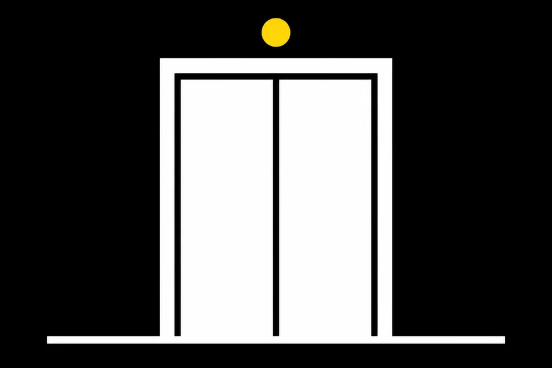
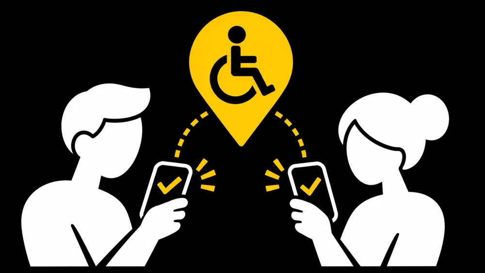
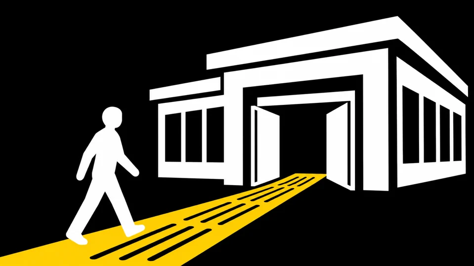
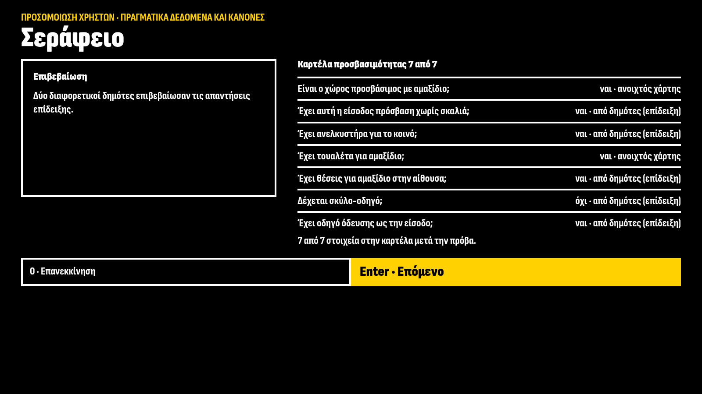

Ο χάρτης της Αθήνας που κρατούν αληθινό οι ίδιοι οι δημότες.
Apps4Athens 3.0 Gov Hackathon
github.com/monkylome/ION-Athens@nikolasgkou@monkylome
κομμάτια πεζοδρομίου στην Αθήνα έχει σπασμένες πλάκες ή ανωμαλίες.
Στο Σεράφειο, όπου γίνεται ο διαγωνισμός, ο ανοιχτός χάρτης απαντά σε 2 από τις 7 ερωτήσεις προσβασιμότητας. Οι άλλες 5: άγνωστο.
Η πληροφορία υπάρχει. Δεν φτάνει στον άνθρωπο την ώρα που περπατάει.
Πηγές: Walkable Athens (Δήμος Αθηναίων και ΕΜΠ, περίπου 27.000 κομμάτια πεζοδρομίου), OpenStreetMap.

«Έχει ανελκυστήρα;» Το άγνωστο γίνεται αίτημα προς την πόλη.

Το ION Play είναι παιχνίδι στον χάρτη: όποιος περνά από εκεί απαντά, ένας δεύτερος επιβεβαιώνει. Η κάμερα προτείνει, ο δημότης αποφασίζει.

Η καρτέλα γεμίζει, η διαδρομή υπολογίζεται πάνω σε ό,τι ισχύει τώρα, και η φωνή διαβάζει την καρτέλα στην άφιξη.

Ἰών: αυτός που περπατάει.
github.com/monkylome/ION-Athens@nikolasgkou@monkylome